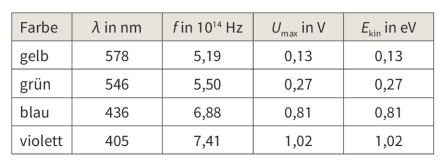
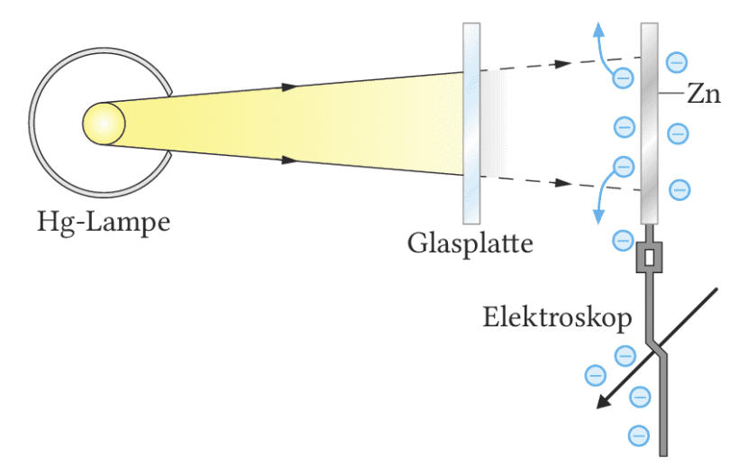
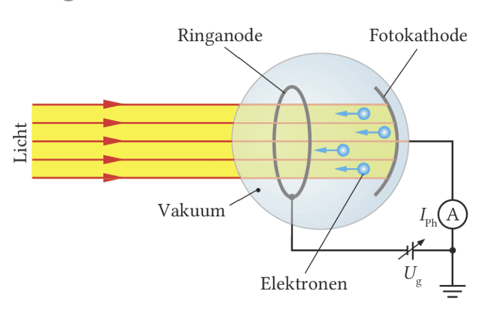
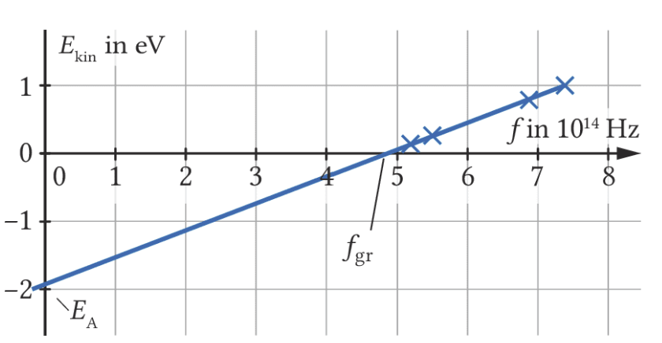
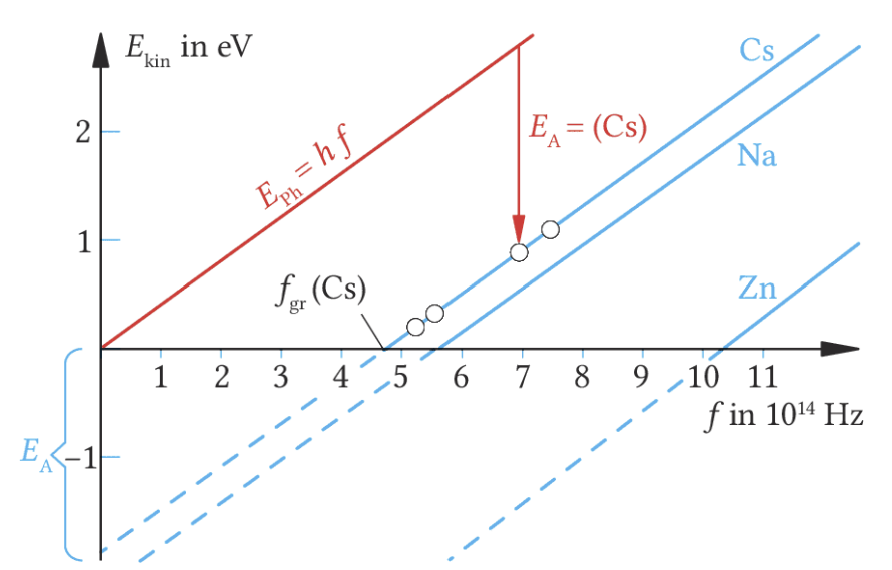
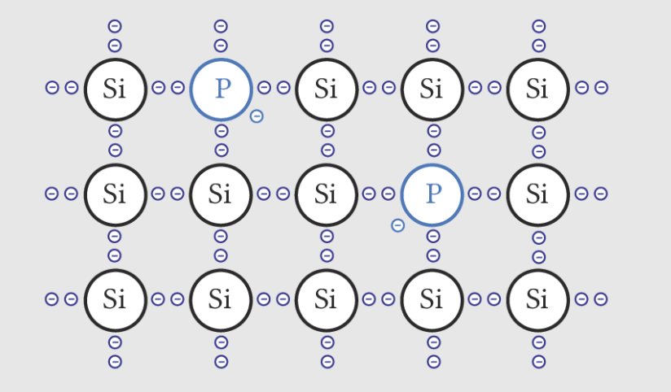
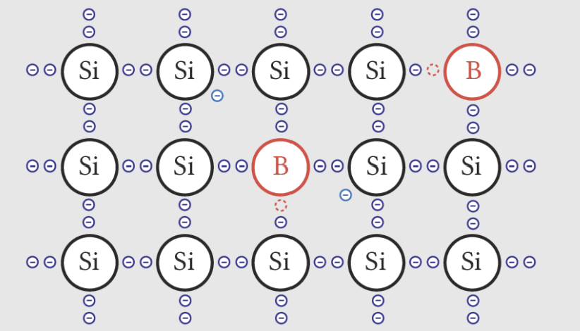
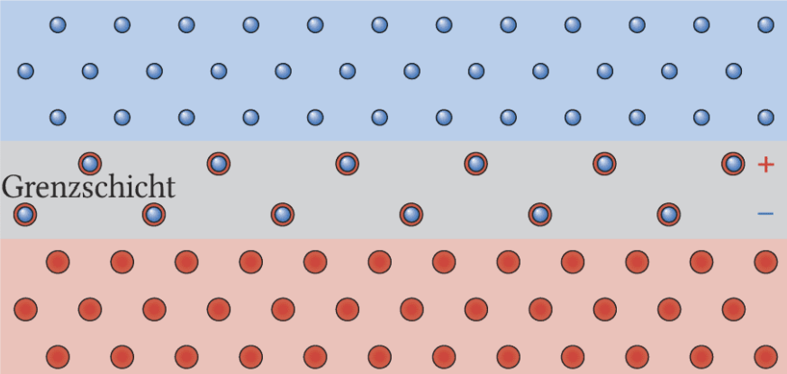
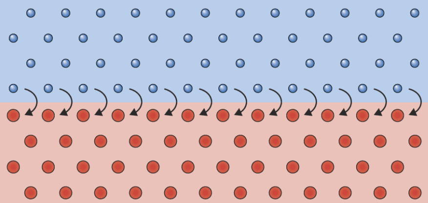

Du arbeitest hier Schritt für Schritt vom Hallwachs-Versuch bis zu Einsteins Deutung mit Photonen. Ziel ist nicht nur, die Formel auswendig zu kennen, sondern zu verstehen, warum die klassische Wellentheorie an dieser Stelle scheitert.
Warum lösen manche Lichtsorten sofort Elektronen aus einem Metall, obwohl helleres Licht allein dafür nicht ausreicht?

Lies jede Seite aktiv. Nach jeder Erklärung folgt eine Sicherung oder Anwendung. Nutze die Bilder nicht nur als Deko, sondern als Beobachtungsmaterial: Was siehst du, was lässt sich daraus begründen, und wo passt das noch nicht zur klassischen Physik?
Merke: In der Oberstufe zählt beim Photoeffekt vor allem die Begründung. Du solltest am Ende erklären können, warum Intensität und Frequenz unterschiedliche Rollen spielen.
Auf dieser Seite arbeitest du die klassische Experimentalkette des äußeren Photoeffekts durch: Hallwachs-Versuch, Gegenfeldmethode, Widersprüche zur Wellentheorie und Einsteins Deutung mit Photonen.
Ein erster Versuch wurde von W. Hallwachs (1888) durchgeführt, der qualitativ den Fotoeffekt zeigt.

Eine negativ geladene Zinkplatte verliert unter UV-haltigem Licht ihre Ladung und wird sogar positiv geladen. Eine positive Platte wird nicht entladen. Die naheliegende Deutung: Licht kann Elektronen aus dem Metall herauslösen. Genau das nennt man Photoeffekt oder Hallwachs-Effekt.
Wichtig ist aber der Vergleich der Varianten: Sichtbares Licht genügt nicht, selbst wenn die Lampe heller wirkt. Eine Glasplatte stoppt den Effekt, weil sie den UV-Anteil absorbiert. Daraus folgt: Entscheidend ist die Frequenz, nicht die Helligkeit.
Licht kann Elektronen aus Metall schlagen, allerdings nicht jedes Licht. Es reicht nicht, mit „mehr Licht“ und damit mit höherer Intensität das Metall zu bestrahlen, sondern Licht muss eine genügend hohe Frequenz haben.
Um den Fotoeffekt genauer zu betrachten, soll jetzt die kinetische Energie $E_{\text{kin}}$ der von Licht ausgelösten Elektronen (auch Photoelektronen genannt) untersucht werden.

In der Photozelle werden durch Licht Elektronen aus einer Caesium-Schicht gelöst und fliegen nach links. Eine Gegenspannung bremst sie auf dem Weg zur Ringanode ab. Wird der Photostrom null, gilt für die schnellsten Elektronen:
\(E_{\text{kin,max}} = e \cdot U_g\)
Violettes Licht liefert eine größere Gegenspannung als blaues Licht, blaues Licht eine größere als grünes Licht und grünes eine größere als gelbes Licht. Die Elektronen starten also mit größerer kinetischer Energie. Verdunkelst du den Lichtfleck nur mit einer Blende, dann sinkt der Photostrom, aber nicht die maximale Energie einzelner Elektronen.
Zeichnet man nun die maximale kinetische Energie der Photoelektronen, wie oben ermittelt, gegen die Frequenz des einfallenden Lichts auf, dann ergibt sich eine lineare Beziehung. Diese Beziehung wird durch die nebenstehende Graphik veranschaulicht. Es wird auch deutlich, dass es eine Grenzfrequenz gibt, d.h. eine Frequenz, unterhalb derer kein Photoelektron ausgelöst wird.
Betrachtet man den $y$-Achsenabschnitt, dann kann man das Austrittsenergie $E_A$ interpretieren, die die Elektronen benötigen, um das Metall verlassen zu können

Die Energie eines einzelnen Photoelektrons hängt von der Frequenz ab. Die Intensität verändert vor allem, wie viele Elektronen pro Zeit ausgelöst werden.
Die klassische Wellentheorie des Lichts kann die Beobachtungen nicht erklären. Sie sagt voraus, dass die Energie eines Elektrons von der Intensität des Lichts abhängen müsste, weil die Energie über die Wellenamplitude verteilt ist. Das Experiment zeigt aber, dass die Energie von der Frequenz abhängt, während die Intensität vor allem die Zahl der Elektronen beeinflusst.
Nach dem klassischen Wellenmodell müsste helleres Licht (größere Intensität) also mehr Energie übertragen und Elektronen dadurch schneller machen. Genau das zeigt das Experiment aber nicht, es werden mehr Elektronen mit der gleichen Energie ausgelöst.
Außerdem müsste sich Energie bei zu schwachem Licht über längere Zeit ansammeln. Dann dürfte es keine harte Grenzfrequenz geben und es müsste eine Verzögerung bis zur Emission auftreten. Tatsächlich werden Elektronen oberhalb der Grenzfrequenz praktisch sofort ausgelöst.
| Vorhersage Wellenmodell | Beobachtung |
|---|---|
| Verzögerter Einsatz des Fotoeffekts, da die Austrittsarbeit erst angehäuft werden muss | Fotoeffekt setzt sofort ein |
| Lichtenergie ist abhängig von Intensität, nicht von Frequenz | Die kinetische Energie der Fotoelektronen hängt von der Frequenz ab, nicht von der Intensität; bei größerer Intensität werden mehr Elektronen ausgelöst |
| Keine Grenzfrequenz | Existenz einer Grenzfrequenz |
Die Beobachtungen widersprechen dem Grundgedanken der Wellentheorie, dass die Energie kontinuierlich verteilt ist.

Wird die Gegenfeldmethode mit verschiedenen Metallen durchgeführt, so erhält man
nebenstehende Diagramme.
Es fällt zum einen auf, dass der Achsenabschnitt für jede Gerade, und damit jedes
Metall, ein anderer ist.
Die vorangegangene Deutung als
Austrittsenergie $E_A$, wird dadurch unterstützt. In
jedem Metall sind die Elektronen unterschiedlich stark
gebunden und brauchen deswegen unterschiedlich viel
Energie, um abgelöst zu werden.
Zum anderen ist zu
erkennen, dass alle Geraden dieselbe Steigung besitzen.
Die kinetische Energie der Photoelektronen wächst
also mit steigender Frequenz des einstrahlenden Lichts
immer auf gleiche Weise und ist damit unabhängig vom
verwendeten Metall.
Alle Geraden können demnach
mit der Gleichung $E_{\text{kin}} = hf – E_A$ beschrieben werden,
wobei $h$ die für alle Geraden gleiche Steigung ist.
Wenn alle Metalle dieselbe Steigung besitzen, dann ist die Umrechnung von Frequenz in Photonenenergie offenbar eine universelle Natureigenschaft. Genau diese Steigung ist $h$.
Unterschiedlich ist nur die Austrittsenergie. Deshalb verschiebt sich die Gerade je nach Material nach oben oder unten, aber sie kippt nicht anders.
Einstein deutete Licht so, als bestünde es aus einzelnen Energieportionen, heute Photonen genannt. Jedes Photon trägt die Energie $E_{\text{ph}} = hf$.
Trifft ein Photon auf ein Elektron im Metall, dann gibt es seine Energie auf einmal ab. Zuerst muss die Austrittsenergie $E_A$ überwunden werden. Nur der Rest erscheint als kinetische Energie des Photoelektrons:
$E_{\text{kin}} = hf - E_A$
Das erklärt sofort, warum blaues Licht energiereicher als rotes Licht ist und warum helleres Licht zwar mehr Elektronen auslösen kann, aber nicht energiereichere Photonen liefert.
Die Quantisierung der Energie in Einsteins Deutung war deshalb so revolutionär, weil Licht damit Eigenschaften eines Teilchens zugeschrieben werden. Nach seiner Idee wird die Energie eines Photons $E_{\text{ph}} = hf$ auf ein Elektron im Metall übertragen.
So kam auch das Welle-Teilchen-Paradox auf: Manche Beobachtungen kann man nur durch den Wellencharakter des Lichts erklären, andere nur mit dem Teilchencharakter. Interferenz spricht für den Wellencharakter, der Photoeffekt für den Teilchencharakter.
Die Energie elektromagnetischer Strahlung ist quantisiert, verfügbar nur in Quanten mit der Energie $E_{\text{ph}} = hf$, den Photonen. Deren Energie hängt nur von der Frequenz $f$, nicht von der Intensität ab: Helles Licht hat mehr Quanten, nicht Quanten größerer Energie.
Nimm zwei Punkte aus der Messgeraden von Caesium:
Dann berechnest du die Steigung:
$h = \frac{\Delta E_{\text{kin}}}{\Delta f}$
mit
$\Delta E_{\text{kin}} = 1{,}02 - 0{,}13 = 0{,}89\,\text{eV}$
$\Delta f = (7{,}41 - 5{,}19)\cdot 10^{14}\,\text{Hz} = 2{,}22 \cdot 10^{14}\,\text{Hz}$
Also:
$h \approx \frac{0{,}89\,\text{eV}}{2{,}22 \cdot 10^{14}\,\text{Hz}} \approx 4{,}01 \cdot 10^{-15}\,\text{eV s}$
Nun rechnest du von eV·s in J·s um:
$h \approx 4{,}01 \cdot 10^{-15}\,\text{eV s}\cdot 1{,}602 \cdot 10^{-19}\,\frac{\text{J}}{\text{eV}} \approx 6{,}4 \cdot 10^{-34}\,\text{J s}$
Damit landest du sehr nahe am bekannten Wert $6{,}626 \cdot 10^{-34}\,\text{J s}$.
Die Steigung der Geraden $E_{\text{kin}}(f)$ liefert die Planck-Konstante $h$. Aus den Messdaten des Photoeffekts kann man also direkt eine fundamentale Naturkonstante bestimmen.
Hier kannst du das Modell direkt ausprobieren. Verändere Material, Wellenlänge, Gegenfeldspannung und Intensität und beobachte, wie sich Photostrom, kinetische Energie und Anzahl der ausgelösten Elektronen ändern.
Teste die Einstein-Gleichung \(E_{\text{kin,max}} = hf - E_A\) an einer animierten Photozelle. Wenn die Photonenenergie zu klein ist, bleibt die Kathode dunkel. Erhöhst du nur die Intensität, steigen vor allem Elektronenzahl und Photostrom.
Die Simulation nutzt typische Austrittsenergien für die gewählten Metalle und ein vereinfachtes Schulmodell für den Photostrom. Physikalisch exakt ist die Kernaussage: \(E_{\text{kin,max}}\) hängt von Frequenz und Material ab, nicht von der Intensität.
Trägst du $E_{\text{kin}}$ gegen die Frequenz $f$ auf, entsteht eine Gerade. Ihre Steigung ist für verschiedene Metalle gleich und entspricht der Planck-Konstante $h$. Der Achsenabschnitt ändert sich dagegen, weil unterschiedliche Metalle unterschiedliche Austrittsenergien besitzen.
Für Caesium gilt näherungsweise $E_A \approx 1{,}93 \,\text{eV}$. Daraus folgt eine Grenzfrequenz von ungefähr $4{,}7 \cdot 10^{14}\,\text{Hz}$. Sichtbares orangenes Licht liegt also bereits in der Nähe der Schwelle.
Gleiche Steigung bedeutet: Das „Umrechnen“ von Frequenz in Photonenenergie ist eine universelle Natureigenschaft und nicht vom Metall abhängig.
Hier zeigt sich, ob du das Modell verstanden hast. Entscheidend ist nicht, ob du Formeln wiederholst, sondern ob du Vorhersagen für neue Situationen begründen kannst.
Beim inneren Photoeffekt verlassen Elektronen den Festkörper nicht. Stattdessen werden sie im Halbleiter zu frei beweglichen Leitungselektronen. Genau das macht Solarzellen möglich.
In einem Halbleiter sind viele Elektronen zunächst an feste Plätze in der Kristallstruktur gebunden. Erhalten sie genügend Energie, können sie auf ein höheres Energieniveau wechseln und sich danach im Halbleiter frei bewegen. Sie werden dann zu Leitungselektronen. Je mehr solcher Elektronen vorhanden sind, desto größer ist die Leitfähigkeit.
Beim inneren Photoeffekt werden Elektronen also nicht aus dem Material herausgelöst, sondern innerhalb des Halbleiters beweglich gemacht.
Die Leitfähigkeit eines Halbleiters lässt sich schon bei Raumtemperatur durch Dotierung erhöhen. Dabei ersetzt man einige Siliciumatome gezielt durch Fremdatome.




n-Dotierung liefert zusätzliche freie Elektronen. p-Dotierung erzeugt Löcher. In beiden Fällen wird der Halbleiter leitfähiger.
Eine Solarzelle besteht aus einer n-dotierten und einer p-dotierten Halbleiterschicht. An der Grenzfläche diffundieren Elektronen aus der n-Schicht und Löcher aus der p-Schicht aufeinander zu. Treffen sie dort zusammen, rekombinieren sie: Das Elektron besetzt das Loch und wird wieder Teil einer Bindung.
In der direkten Umgebung der Grenzfläche bleibt dadurch ein Bereich zurück, in dem weder freie Leitungselektronen noch Löcher in großer Zahl vorliegen. Diese Grenzschicht trägt Raumladungen. Genau diese Raumladungen sorgen später dafür, dass getrennte Elektronen und Löcher zu unterschiedlichen Seiten der Solarzelle beschleunigt werden.
Durch die Rekombination entstehen im p-n-Übergang feste Raumladungen. Sie bauen ein inneres elektrisches Feld auf. Dieses Feld trennt die durch Licht erzeugten Elektronen und Löcher und macht so eine Spannung an der Solarzelle messbar.
Trifft Licht auf die Solarzelle, erhalten gebundene Elektronen Energie von Photonen. Ist diese Energie groß genug, verlassen sie ihre gebundene Position und werden zu frei beweglichen Leitungselektronen. Gleichzeitig bleiben Löcher zurück. Das innere elektrische Feld im p-n-Übergang trennt beide Ladungsträger.
Dadurch sammeln sich Elektronen bevorzugt auf der n-Seite und Löcher auf der p-Seite. Diese Ladungstrennung kann als Spannung abgegriffen werden und liefert elektrische Energie.
Wie beim äußeren Photoeffekt gilt auch hier: Die Energie kommt nicht nach und nach von vielen Wellenbergen, sondern in Portionen von einzelnen Photonen. Fachlich korrekt heißt das: Ein Photon kann ein Elektron nur dann in den leitfähigen Zustand bringen, wenn seine Energie mindestens groß genug ist, um die nötige Energielücke im Halbleiter zu überbrücken.
Innerer Photoeffekt: In Halbleiter-Solarzellen erhalten gebundene Elektronen Energie von Photonen. Sie werden im Halbleiter zu frei beweglichen Ladungsträgern. Das elektrische Feld der Grenzschicht trennt Elektronen und Löcher und erzeugt so eine nutzbare Spannung.
Warum reagieren Nachtsichtgeräte schon auf Infrarot, Zink aber erst auf UV? Der Unterschied steckt in der materialabhängigen Austrittsenergie.
Wenn du die Gerade $E_{\text{kin}}(f)$ für zwei Metalle vergleichst, verrät dir ihre gemeinsame Steigung etwas Universelles über Licht.